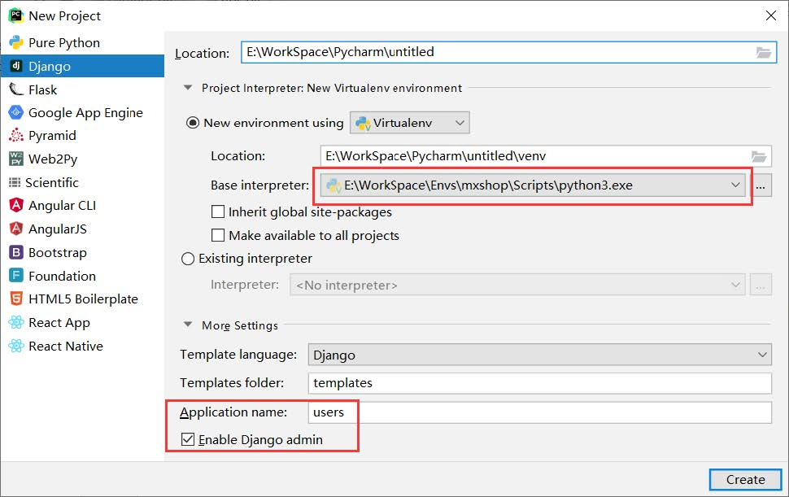
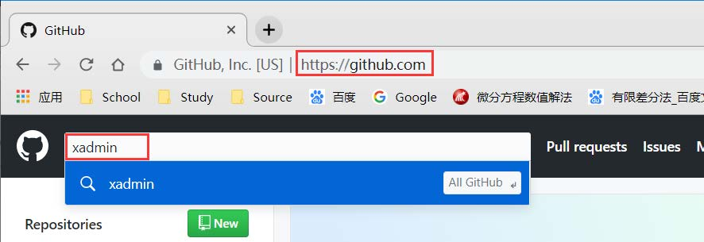

Django学习笔记
 CoMath
CoMath
Python下有许多款不同的 Web 框架. Django是最有代表性的一个. 许多成功的网站和APP都基于Django. 2019年通过慕课网的视频教学整理了由基于Django的网站开发. 整过过程持续了多长时间已经记不清了. 中间很多磕磕碰碰，网上找了很多材料整合成了一个笔记. 本来想着能接着做点东西，但后来还是没捡起来.
虚拟环境的安装与配置
virtualenv
virtualenv是一款轻量级第三方虚拟环境管理工具.
Windows
安装virtualenv命令：pip install virtualenv
pip安装技巧：python豆瓣源：https://pypi.doubanio.com/simple/
安装时中间加入豆瓣源即可，如：
pip3 install -i https://pypi.doubanio.com/simple/ selenium
easy_install -i https://pypi.doubanio.com/simple/ selenium
创建虚拟环境：
- 正常创建：virtualenv 虚拟环境名称
- 其他版本：virtualenv -p python版本\python.exe 虚拟环境名称
进入到虚拟环境的目录下执行activate.bat命令启动虚拟环境
退出虚拟环境deactivate.bat命令
Linux
安装virtualenv命令：sudo apt-get install python-virtualenv
创建虚拟环境：virtualenv 虚拟环境名称（默认是Python2.7版本）
需要进入到虚拟环境的bin目录下执行source activate启动虚拟环境
退出虚拟环境命令：deactivate
创建Python3的虚拟环境：
virtualenv -p python3目录 虚拟环境名称
virtualenv -p /usr/bin/python3 py3test
virtualenvwrapper
virtualenv使用过于麻烦，所以便于管理，使用virtualenvwrapper（依赖virtualenv）
Windows
安装：
pip install virtualenvwrapper-win
命令：
- workon：查看所有虚拟环境；
- workon XXX：启动名为XXX的虚拟工作环境；
- mkvirtualenv XXX ：创建名为XXX的虚拟环境；（目录在C:\Users\Wise_Hai\Envs）
- mkvirtualenv –python=python版本目录\python.exe XXX：创建名为XXX的python版本的虚拟环境；
- deactivate：关闭当前虚拟环境.
配置工作环境（可选）
- 计算机右键属性 》高级系统设置 》环境变量
- 新建系统变量
- 变量名：WORKON_HOME
- 变量值：工作环境地址
- 保存并退出，重新开启命令行窗口
- 如果需要，可以找到之前的虚拟环境目录将其中的虚拟环境直接拷贝过来即可.
备注：可在虚拟环境中安装任意包，如果出错可以在这里中找到安装失败的包及相应的版本进行下载安装，在执行之前的安装命令.
Linux
安装命令：pip install virtualenvwrapper
Linux不能像Windows一样直接调用mkvirtualenv，因为没有配置.
- 创建目录来存放虚拟环境
- mkdir $HOME/.virtualenvs
- 需要通过sudo find / -name virtualenvwrapper.sh在根目录下查找virtualenvwrapper.sh文件的路径
- 配置文件：vim/sudo gedit ~/.bashrc
- export WORKON_HOME=$HOME/ .virtualenvs
- export VIRTUALENVWRAPPER_PYTHON=/usr/bin/python3 #如果是pip3安装的virtualenvwrapper把这条加上
- 最后一行添加source virtualenvwrapper.sh文件的路径
- 重新加载：source ~/.bashrc
- mkvirtualenv XXX ：在~/ .virtualenvs创建名为XXX的虚拟环境
- mkvirtualenv –python=/usr/bin/python3 XXX：创建名为XXX的python版本的虚拟环境；
环境配置及Model设计
环境配置（PyCharm，MySQL，Django1.11）
此项目主要是在Windows上创建并执行，所以所有环境需改成Windows环境，由于之前安装过Anconda，而虚拟环境需要pip安装virtualenv，所以通过以下方法使得Anconda与Python3.6共存，并且可以切换：
安装Python3.6（不添加到Path），在Python目录下将python.exe文件更名为python3.exe，并将其添加到Path下即可.测试：cmd中使用python3命令.
项目初始化
-
创建虚拟环境（这里随便起的名字）
-
安装Django Rest Framework（基于Django）
-
安装Django Rest Framework：pip install djangorestframework
注意：DjangRestFramework没有安装Django，需要手动安装
-
-
安装Django
pip install -i https://pypi.doubanio.com/simple/ django
地址：https://www.django-rest-framework.org/
-
安装markdown和django-filter
pip install markdown django-filter
-
Pycharm创建Django项目
-
测试运行
-
更改数据库配置
将setting.py中的DATABASE内容

DATABASES = { 'default': { 'ENGINE': 'django.db.backends.mysql', # 连接mysql数据库 'NAME': "mxshop", # 数据库名称 'USER': 'root', # 账户 'PASSWORD': "root", # 密码 'HOST': "127.0.0.1", # 地址 "OPTIONS":{"init_command":"SET default_storage_engine=INNODB;"} # mysql数据库的版本5.6以后 # 'OPTIONS': { 'init_command': 'SET storage_engine=INNODB;' } # 用于第三方登录 } } -
创建数据库
MySQL数据库下创建名为mxshop的数据库（此时重新运行醒目会出现数据库连接错误，主要是因为缺少连接数据的mysqlckient或者MySQL-python包）
-
安装mysqlclient数据库
pip install -i https://pypi.doubanio.com/simple/ mysqlclient
此处可能有坑，如果报错无法安装，https://www.lfd.uci.edu/~gohlke/pythonlibs/#mysqlclient找到对应版本下载，通过pip install xx 安装即可
如果出现下面问题，可能的问题
?: (mysql.W002) MySQL Strict Mode is not set for database connection ‘default’ HINT: MySQL’s Strict Mode fixes many data integrity problems in MySQL, such as data truncation upon insertion, by escalating warnings into errors. It is strongly recommended you activate it. See: https://docs.djangoproject.com/en/2.1/ref/databases/#mysql-sql-mode
# 解决 DATABASES = { 'default': { 'OPTIONS': { "init_command": "SET sql_mode='STRICT_TRANS_TABLES'", } } } -
安装图片处理包
pip install -i https://pypi.doubanio.com/simple/ pillow
-
整理项目结构
创建Package
- apps：保存所有app
- extra_apps：存放第三方的包，随着源码包打包而不会安装到虚拟环境中
创建Directory
- media：保存图片等
- db_tools：数据库初始化等
为了以后方便将apps和extra_apps映射Sources Root并且加入到setting的搜索目录下
import sys sys.path.insert(0, BASE_DIR) sys.path.insert(0, os.path.join(BASE_DIR, 'apps')) sys.path.insert(0, os.path.join(BASE_DIR, 'extra_apps'))
app models设计
在Tools的Run manage.py Task下运行startapp xxx创建model
找到对应model的逻辑，创建相应的model
注意：此处有坑！！
与视频不同的地方在于django以及MySQL的版本不同，创建外键的时候需要添加on_delete=models.CASCADE
users-用户相关
这里面主要是使用UserProfile覆盖了原Users
# _*_ encoding:utf-8
from datetime import datetime
from django.db import models
from django.contrib.auth.models import AbstractUser
class UserProfile(AbstractUser):
nick_name = models.CharField(max_length=50, verbose_name=u"昵称", default="")
birthday = models.DateField(verbose_name=u"生日", null=True, blank=True)
gender = models.CharField(max_length=5, choices=(("male", u"男"), ("female", "女")), default="female")
address = models.CharField(max_length=100, default=u"")
mobile = models.CharField(max_length=11, null=True, blank=True)
image = models.ImageField(upload_to="image/%Y/%m", default=u"image/default..jpg", max_length=100)
class Meta:
verbose_name = u"用户信息"
verbose_name_plural = verbose_name
def __unicode__(self):
return self.username
class EmailVerifyRecord(models.Model):
code = models.CharField(max_length=20, verbose_name=u"验证码")
email = models.EmailField(max_length=50, verbose_name=u"邮箱")
send_type = models.CharField(max_length=10, choices=(("register", u"注册"), ("forget", u"找回密码")))
send_time = models.DateTimeField(default=datetime.now)
class Meta:
verbose_name = u"邮箱验证码"
verbose_name_plural = verbose_name
# def __unicode__(self):
# return self.username
class Banner(models.Model):
title = models.CharField(max_length=100, verbose_name=u"标题")
image = models.ImageField(upload_to="banner/%Y/%m", verbose_name=u"轮播图")
url = models.URLField(max_length=200, verbose_name=u"访问地址")
index = models.IntegerField(default=100, verbose_name=u"顺序")
add_time = models.DateTimeField(default=datetime.now, verbose_name=u"添加时间")
class Meta:
verbose_name = u"轮播图"
verbose_name_plural = verbose_name
courses-课程相关
# _*_ encoding:utf-8
from django.db import models
from datetime import datetime
class Course(models.Model):
name = models.CharField(max_length=50, verbose_name=u"课程名称")
desc = models.CharField(max_length=50, verbose_name=u"课程描述")
detail = models.TextField(verbose_name=u"课程详情")
degree = models.CharField(max_length=2, choices=(("cj", "初级"), ("zj", "中级"), ("gj", "高级")))
learn_times = models.IntegerField(default=0, verbose_name=u"学习时长（分钟）")
students = models.IntegerField(default=0, verbose_name=u"学习人数")
fav_nums = models.IntegerField(default=0, verbose_name=u"收藏人数")
image = models.ImageField(upload_to="courses/%Y/%m", verbose_name=u"封面图", max_length=100)
click_nums = models.IntegerField(default=0, verbose_name=u"点击数")
add_time = models.DateTimeField(default=datetime.now, verbose_name=u"添加时间")
class Meta:
verbose_name = u"课程"
verbose_name_plural = verbose_name
class Lesson(models.Model):
course = models.ForeignKey(Course, verbose_name=u"课程", on_delete=models.CASCADE)
name = models.CharField(max_length=100, verbose_name=u"章节名称")
add_time = models.DateTimeField(default=datetime.now, verbose_name=u"添加时间")
class Meta:
verbose_name = u"章节"
verbose_name_plural = verbose_name
class Video(models.Model):
lesson = models.ForeignKey(Lesson, verbose_name=u"课程", on_delete=models.CASCADE)
name = models.CharField(max_length=100, verbose_name=u"视频名称")
add_time = models.DateTimeField(default=datetime.now, verbose_name=u"添加时间")
class Meta:
verbose_name = u"视频"
verbose_name_plural = verbose_name
class CourseResource(models.Model):
course = models.ForeignKey(Course, verbose_name=u"课程", on_delete=models.CASCADE)
name = models.CharField(max_length=100, verbose_name=u"名称")
download = models.FileField(upload_to="course/resource/%Y/%m", verbose_name=u"资源文件", max_length=100)
add_time = models.DateTimeField(default=datetime.now, verbose_name=u"添加时间")
class Meta:
verbose_name = u"课程资源"
verbose_name_plural = verbose_name
organization-机构相关
# _*_ encoding:utf-8
from django.db import models
from datetime import datetime
class CityDic(models.Model):
name = models.CharField(max_length=20, verbose_name=u"城市")
desc = models.CharField(max_length=200, verbose_name=u"描述")
add_time = models.DateTimeField(default=datetime.now, verbose_name=u"添加时间")
class Meta:
verbose_name = u"城市"
verbose_name_plural = verbose_name
class CourseOrg(models.Model):
name = models.CharField(max_length=50, verbose_name=u"机构名称")
desc = models.CharField(max_length=50, verbose_name=u"机构描述")
fav_nums = models.IntegerField(default=0, verbose_name=u"收藏人数")
click_nums = models.IntegerField(default=0, verbose_name=u"点击数")
image = models.ImageField(upload_to="courses/%Y/%m", verbose_name=u"封面图", max_length=100)
address = models.CharField(max_length=150, verbose_name=u"机构地址")
city = models.ForeignKey(CityDic, on_delete=models.CASCADE, verbose_name=u"所在城市")
add_time = models.DateTimeField(default=datetime.now, verbose_name=u"添加时间")
class Meta:
verbose_name = u"课程机构"
verbose_name_plural = verbose_name
class Teacher(models.Model):
org = models.ForeignKey(CourseOrg, on_delete=models.CASCADE, verbose_name=u"所属机构")
name = models.CharField(max_length=50, verbose_name=u"教师名")
work_years = models.IntegerField(default=0, verbose_name=u"工作年限")
work_company = models.CharField(max_length=50, verbose_name=u"就职公司")
work_position = models.CharField(max_length=50, verbose_name=u"公司职位")
points = models.CharField(max_length=50, verbose_name=u"教学特点")
fav_nums = models.IntegerField(default=0, verbose_name=u"收藏人数")
click_nums = models.IntegerField(default=0, verbose_name=u"点击数")
class Meta:
verbose_name = u"教师"
verbose_name_plural = verbose_name
operation-操作相关
# _*_ encoding:utf-8
from django.db import models
from datetime import datetime
from users.models import UserProfile
from courses.models import Course
class UserAsk(models.Model):
name = models.CharField(max_length=20, verbose_name=u"姓名")
mobile = models.CharField(max_length=11, verbose_name=u"手机")
course_name = models.CharField(max_length=50, verbose_name=u"课程名")
add_time = models.DateTimeField(default=datetime.now, verbose_name=u"添加时间")
class Meta:
verbose_name = u"用户咨询"
verbose_name_plural = verbose_name
class CourseComments(models.Model):
"课程评论"
user = models.ForeignKey(UserProfile, on_delete=models.CASCADE, verbose_name=u"用户")
course = models.ForeignKey(Course, on_delete=models.CASCADE, verbose_name=u"课程")
comments = models.CharField(max_length=200, verbose_name=u"评论")
add_time = models.DateTimeField(default=datetime.now, verbose_name=u"添加时间")
class Meta:
verbose_name = u"课程评论"
verbose_name_plural = verbose_name
class UserFavorite(models.Model):
user = models.ForeignKey(UserProfile, on_delete=models.CASCADE, verbose_name=u"用户")
fav_id = models.IntegerField(default=0, verbose_name=u"数据id")
fav_type = models.IntegerField(choices=((1, "课程"), (2, "课程机构"), (3, "讲师")))
add_time = models.DateTimeField(default=datetime.now, verbose_name=u"添加时间")
class Meta:
verbose_name = u"用户收藏"
verbose_name_plural = verbose_name
class UserMessage(models.Model):
user = models.IntegerField(default=0, verbose_name=u"接收用户")
message = models.CharField(max_length=500, verbose_name=u"消息内容")
has_read = models.BooleanField(default=False, verbose_name=u"是否已读")
add_time = models.DateTimeField(default=datetime.now, verbose_name=u"添加时间")
class Meta:
verbose_name = u"用户消息"
verbose_name_plural = verbose_name
class UserCourse(models.Model):
user = models.ForeignKey(UserProfile, on_delete=models.CASCADE, verbose_name=u"用户")
course = models.ForeignKey(Course, on_delete=models.CASCADE, verbose_name=u"课程")
add_time = models.DateTimeField(default=datetime.now, verbose_name=u"添加时间")
class Meta:
verbose_name = u"用户课程"
verbose_name_plural = verbose_name
考虑到存在很多models的情况，创建名为apps的Python Package，存储所有的models，并且将所有apps映射成Sources Root（否则，各个model中调用的包将报错）
并且，在settings.py中设置
import os
import sys
BASE_DIR = os.path.dirname(os.path.dirname(os.path.abspath(__file__)))
sys.path.insert(0, os.path.join(BASE_DIR, 'apps'))
文件上传操作
设置字段的时候存在上传文件路径，所以需要配置文件上传的目录
image = models.ImageField(upload_to="courses/%Y/%m")
项目根目录下创建名为miedia的Directory，然后在settings.py中添加
MEDIA_URL = '/media/'
MEDIA_ROOT = os.path.join(BASE_DIR, 'media')
文件上传访问
配置文件上传访问处理函数
from django.views.static import serve
from mxonline.settings import MEDIA_ROOT
# 配置文件上传的访问处理函数
url(r'^media/(?P<path>.*)$', serve, {"document_root": MEDIA_ROOT}),
配置上下文处理器（在settings.py中找到TEMPLATES下的'context_processors' 添加'django.template.context_processors.media',),其目的是将{{ MEDIA_URL }}注册到url中
TEMPLATES = [
{
'OPTIONS': {
'context_processors': [
'django.template.context_processors.media',
],
},
},
]
在对应位置即可访问上传的图片
<img width="200" height="120" class="scrollLoading" data-url="{{ MEDIA_URL }}{{ xxx.image }}"/>
后台管理系统
admin
创建Django之后就会自动生成再带的后台管理系统（注意：红色框框）
在PyCharm的新版本中创建Django文件的时候，不要勾掉最后的Enable Django admin

通过http://127.0.0.1:8000/admin进行访问，但是Django并不默认生成登录账号及密码，需要通过createsuperuser注册admin后台管理的账号和密码
修改成中文显示：在settings.py中设置
LANGUAGE_CODE = 'zh-hans'
TIME_ZONE = 'Asia/Shanghai'
USE_I18N = True
USE_L10N = True
USE_TZ = False
默认显示的只有Group，如果想显示其他model，需要在对应的model目录下的admin中创建对应的class即可
form django.contrib import admin
form .model import UserProfile
class UserProfileAdmin(admin.ModelAdmin): # 添加一个管理器
pass
admin.site.register(UserProfile, UserProfileAdmin) # 关联注册
url配置技巧
urlpatterns = [
# url(R'^admin/', admin.site.urls)
url(r'^form/$', getform, name='go_form')
]
解释为：以^后的名字开头，以/$结尾，转到getform的views下，在html的form表单中，可以通过配置action="{% url ‘go_form’ %}“提交表单.
xadmin
命令安装
-
安装
在对应的虚拟环境中通过pip install xadmin进行安装.（依赖的安装包也会被安装）
-
环境配置
在项目setting.py中，找到INSTALLED_APPS，在下面添加’xadmin’以及’crispy_forms'，在urls.py中，引入xadmin包，并经命令中的admin改成xadmin.
import xadmin urlpatterns = [ url(r'^xadmin/', xadmin.site.urls), ] -
生成管理表单
配置之后，xadmin需要自己的管理表单，所以重新创建表单makemigrations，migrate
源码安装(推荐使用)
-
GitHub下载

-
安装
解压下载的xadmin-master.zip文件，找到其中的xadmin文件夹并将其拷贝到项目文件的根目录下，为了能够更好的管理，也为了model能够直接访问到xadmin，创建一个package包（例如：extra_apps），并将其映射成Sources Root，将xadmin文件夹拖到改文件夹下即可.
注意：此时可以卸载命令行安装的xadmin包，但是不要卸载自动下载的依赖包.除此之外，还需要在setting.py下注册extra_apps.
sys.path.insert(0, os.path.join(BASE_DIR, 'extra_apps'))依赖包：
此处有坑：（Django版本在2.0以上有坑）
-
首先报错：“ from future.utils import iteritems ImportError: No module named future.utils”
-
原因是缺少future包
-
解决方法：
- pip install future
-
然后报错：from django.urls import NoReverseMatch, reverse
-
原因是django2.0 把原来的 django.core.urlresolvers 包 更改为了 django.urls包
-
解决方法：
- 将django.core.urlresolvers 改为 django.urls
-
有坑！！！！
-
有坑！！！！
-
有坑！！！！
-
参照https://www.cnblogs.com/netalen/p/10987016.html更改
还有坑：需要将生成xadmin管理表，即执行makemigrations xadmin以及migrate xadmin.
-
-
环境配置
将model注册到xadmin：
在相应的model创建adminx.py文件，并且
import xadmin from .models import modelClassName class modelClassNameAdmin(object): list_display = ['字段1', '字段2', ...]/('',) # 显示xadmin列表题头(最好选择数组类型) search_fields = ['字段1', '字段2', ...]/('',) #搜索功能 listr_filter = ['字段1', '字段2', ...]/('',) # 过滤器功能 xadmin.site.register(modelClassName, modelClassNameAdmin)如果存在外键，在添加过滤器功能的时候需要制定通过哪个字段，如：‘User__name’
这里要注意的是，添加一条数据之后需要添加以下代码，才能显示想要的数据
def __unicode__(self): return self.name # 或者 def __str__(self): return self.name -
xadmin源码安装优势
可以享用xadmin的新特性，并且可以根据需求添加插件等.
-
xadmin全局修改
-
设置主题：
在adminx.py下创建calss
from xadmin import views class BaseSetting(object): enable_themes = True use_bootswatch = True xadmin.site.register(views.BaseAdminView, BaseSetting) -
全局变量
from xadmin import views class GlobalSetting(object): site_title = "" site_footer = "" menu_style = "accordion" # 折叠菜单 xadmin.site.register(views.CommAdminView, GlobalSetting)备注：如果需要对显示菜单名称改成中文咋需要在对应model下找到apps.py进行添加，然后更改当前目录下的
__init__.pyapps.py下添加
verbose_name = u"Name"__init__.py下添加：default_app_config = model.apps.ModelConfig注意：如果在setting.py中配置
.XxxConfig则不需要上述__init__.py操作.
-
前端
首页
首先准备好前端页面及样式
在项目下创建名为static的Directory，同于存放所有的静态文件，并将img/images/css/js等文件拷贝到static文件夹下
然后在urls.py中配置url即可访问
from django.views.generic import TemplateView
urlpatterns = [
url('^$', TemplateView.as_view(template_name="index.html"), name="index")
]
存在问题：静态文件没有加载
解决方法：
-
settings.py中找到
STATIC_URL = '/static/'，在下面添加STATICFILES_DIRS = ( os.path.join(BASE_DIR, "static"), ) -
在对应的html界面中找到对应的样式文件，将相对路径跟改为/static/…或者引入
{% load staticfiles %}然后使用{% static 'css/xx.css' %}
登录页面
页面
-
复制登录页面到template下，并更改样式文件
-
配置url访问路径：
url('^login/$', TemplateView.as_view(template_name="login.html"), name="login") -
找到index.html下的登录入口，a标签更改为
href="/login"或者{% url 'login' %}
url使用include
在项目下的urls.py文件中可以通过include导入其他url配置文件（url分解），也是为了更好的管理，不至于项目下的urls.py杂乱无章. 可以在对应的app下创建urls.py文件，然后导入即可.
# 项目下的urls.py文件
from django.conf.urls import url, include
urlpatterns = [
# namespace命名空间
url(r'^org/$', include('organization.urls'), namespace="org"),
]
# organization下的urls.py
from django.conf.urls import url, include
urlpatterns = [
# ...
url(r'^list/$', OrgListView.as_view(), name="org_list"),
]
访问以org*开头的的url都会到organization.urls中查找，提交变为
<a href="{% url 'org:org_list' %}"></a>
访问地址由原来的http://127.0.0.1:8000/org-list变为http://127.0.0.1:8000/org/list
逻辑
在users下的views.py中添加逻辑
注意：在view中配置函数逻辑后，就可以替换url下的内容，如：
在views.py中创建login函数方法
def login(request):
if request.method == "POST":
pass
elif request.method == "GET":
return render(request, "login.html", {})
在urls.py中就可以更改为：
from django.views.generic import TemplateView
from model.views import login
urlpatterns = [
url('^$', login, name="index")
]
注意：这里面的login不带()，不是点用函数方法，只是指向了login函数.
-
HTML表单提交
主要在于action以及method，除此之外，Django自带一种安全机制，防止跨越提交，反复向后台提交表单对服务器造成负担，Django为了防止这种攻击，会做一种CSRF验证（当用post提交数据的时候，Django会去检查是否有一个CSRF的随机字符串，如果没有就会报错），所以需要在form表单里面添加
{% csrf_token %}（可以查看页面源码,看到form中有一个input是隐藏的）!
-
接收数据
views.py通过
request.POST.get("labelName","")来获取表单中的数据，第一个参数为参数名字，第二个参数为默认值.
-
基于函数的登录操作
Django自带的用户认证auth，django.contrib.auth中提供了许多方法，其中：
-
authenticate()
提供了用户认证，即验证用户名以及密码是否正确，一般需要username password两个关键字参数，如果认证信息有效，会返回一个 User 对象.authenticate()会在User 对象上设置一个属性来标识后端已经认证了该用户，且该信息在后续的登录过程中是需要的。当试图登陆一个从数据库中直接取出来不经过authenticate()的User对象时会报错！
from django.contrib.auth import authenticate user = authenticate(username='username',password='password')-
User对象
User 对象属性：username， password（必填项）password用哈希算法保存到数据库
is_staff ： 用户是否拥有网站的管理权限.
is_active ： 是否允许用户登录, 设置为
False，可以不用删除用户来禁止 用户登录
-
-
login(HttpRequest, user) 该函数接受一个HttpRequest对象，以及一个认证了的User对象
备注：auth.login方法将校验通过的用户封装到request中，这样在request的生命周期我们都可以使用request.user得到这个用户的对象，不管是在视图函数还是在模板语言中都可以使用request.user 然后在
.字段属性来取到需要的内容。此函数使用django的session框架给某个已认证的用户附加上session id等信息.from django.contrib.auth import authenticate, login def user_login(request): if request.method == "POST": username = request.POST.get("username", "") password = request.POST.get("password", "") user = authenticate(username=username, password=password) if user is not None: login(request, user) return render(request, "index.html") else: return render(request, "login.html", {"msg": "用户名或密码错误"}) elif request.method == "GET": return render(request, "login.html", {})显示错误信息：
逻辑代码中返回的错误信息可以用
{{ }}来显示在页面中<div class="error btns login-form-tips" id="jsLoginTips">{{ msg }}</div>-
is_authenticated()
判断是否已经通过了认证，但通过认证并不意味着用户拥有任何权限，这个方法甚至也不检查该用户是否处于激活状态，只是表明用户成功的通过了认证。
这个方法很重要, 在后台用request.user.is_authenticated()判断用户是否已经登录，如果true则可以向前台展示request.user.name
备注：前端可以通过
{% request.user.is_authenticated() %}进行判断.
-
-
logout(request) 注销用户
from django.contrib.auth import logout def logout_view(request): logout(request) # Redirect to a success page.该函数接受一个HttpRequest对象，无返回值。当调用该函数时，当前请求的session信息会全部清除。该用户即使没有登录，使用该函数也不会报错.
备注：注销用户后，直接访问这个路径，还可以登录，但是可以
print(request.user)，当用户通过校验登录时，得到的是一个具体的用户对象；当注销时，再次访问，就会输出AnonymousUser（是一个类 <class ‘django.utils.functional.SimpleLazyObject’>），意为匿名用户，可以通过这个处理一些判断.
-
-
多账户信息登录
需要在usersModel下的views.py中创建继承
django.contrib.auth.backends import ModelBackends的类，然后定义函数，并将函数注册到settings.py下from django.contrib.auth.backends import ModelBackends from django.db.models import Q calss CustomBackend(ModelBackends): # 该方法会被django自动调用 def authenticate(self, username=None, password=None, **kwargs): try: # 根据用户名查找是否存在用户(get()函数只会返回存在一个的数据) user = User.oject.get(username=username) # 如果行多个账号形式，需要导入Q包，然后执行： # user = User.oject.get(Q(username=username)|Q(email=username) if user.check_password(password): return user except Exception as e: retirn Nonesettings.py中配置
AUTHenTICATION_BACKENDS = ( 'model.views.CustomBackend', )Q：
a、在 filter() 等函式中关键字参数彼此之间都是 “AND” 关系。如果你要执行更复杂的查询(比如，实现筛选条件的 OR 关系)，可以使用 Q 对象。 b、Q对象包括 AND 关系 和OR 关系 c、Q 对象可以用 & 和 | 运算符进行连接。当某个操作连接两个 Q 对象时，就会产生一个新的等价的 Q 对象。
如：下面这段语句就产生了一个 Q ，这是用 “OR” 关系连接
Q(question__startswith='Who') | Q(question__startswith='What')d、每种查询函式(比如 filter(), exclude(), get()) 除了能接收关键字参数以外，也能以位置参数的形式接受一个或多个 Q 对象。如果你给查询函式传递了多个 Q 对象，那么它们彼此间都是**“AND” 关系。**例如：
Poll.objects.get( Q(question__startswith='Who'), Q(pub_date=date(2005, 5, 2)) | Q(pub_date=date(2005, 5, 6)) )e: filter() 等函数 可以接受 Q对象和条件参数，但Q对象必须放在 条件参数前面
settings.py中配置，重载变量
-
基于类的登录操作
定义继承django.views.generic.base下View的class类，直接重写get/post方法
from django.views.generic.base import View class LoginView（View）： def get(self, request): return render(request, "login.heml", {}) def post(self, request): username = request.POST['username'] password = request.POST['password'] user = authenticate(username=username, password=password) if user is not None: login(request, user) # Redirect to a success page. ... else: # Return an 'invalid login' error message. ...同时urls.py中还要更改为
from model.views import LoginView urlpatterns = [ # 调用LoginView下的as_view()方法 url('^login/$', LoginView.as_view(), name="index") ] -
Django Form 表单
在实际的生产环境中比如登录和验证的时候，一般都使用Jquery+ajax来判断用户的输入是否为空，假如JS被禁用的话，这个认证屏障是就消失了（虽然一般不会禁用掉但是还是存在风险）
所以一般做两种认证一种是前端做一遍认证，在后端做一遍认证. 通过Django的form来实现.
-
Django的form的作用： 1). 生成html标签
2). 用来做用户提交的验证
-
生成
创建forms.py脚本文件
from django import forms class Loginform(forms.Form): # 要求 变量名与form表单提交的字段名一致 email = forms.EmailField(required=True) #required是否可以为空,如果为False说明可以为空 username = forms.CharField() #如果required不写默认为Ture password = forms.CharField()views.py中
from .forms import LginForm # 创建实例,LoginForm(参数)需要传入字典类型的参数，这里将request.POST传入即可 login_form = LoginForm(request.POST) # 就可以通过.is_valid()来判断用户输入是否合法 if login_form.is_valid(): pass
使用
.is_valid()函数之后可以更改返回页面的错误信息，return render(request, "login.html", {"login_form": login_form})html页面中获取可以使用
循环获取错误信息：
{% for key, error in login_form.errors.items %}{{ error }}{% endfor %}{{ msg }} -
Forms.ModelForm
ModelForm表单同样需要导入包from django import forms,它可以简化元form表单的生成，即可以直接将Model转换成表单，通过定义Meta类来指定Model，并且使用files指定哪些变量为表单内容
from django import forms
from operation.models import UserAsk
class UserAskForm(forms.ModelForm):
# 这里可以再添加字段
# temp = forms.CharField()
class Meta:
model = UserAsk
fields = ['name', 'mobile', 'course_name']
# 如果相对某个字段进行正则判断，可以定义'clean_字段名'的函数
def clean_mobile(self):
# 验证手机号码是否合法
mobile = self.cleaned_data['mobile']
REGEX_MOBIE = "^1[358]\d{9}$|^147\d{8}$|^176\\d{8}$"
p = re.compile(REGEX_MOBIE)
if p.match(mobile):
return mobile
else:
# 抛出异常
raise forms.ValidationError(u"手机号码非法", "mobile_invalid")
实例化过程
class AddUserAskView(View):
def post(self, request):
userask_form = UserAskForm(request.POST)
if userask_form.valid():
user_ask = userask_form.save(commit=True)
备注：无需提取表单信息，直接save()即可
注意：需要指定save()参数commit=TRUE否则无法存入数据库
注册页面
页面
DJango captcha 验证码插件

下拉找到documentation online
- Installation
-
Install
django-simple-captchavia pip:pip install django-simple-captcha -
Add
captchato theINSTALLED_APPSin yoursettings.py -
Run
python manage.py migrate -
Add an entry to your
urls.py:urlpatterns += [ url(r'^captcha/', include('captcha.urls')), ]
-
Adding to a Form
from django import forms from captcha.fields import CaptchaField class CaptchaTestForm(forms.Form): myfield = AnyOtherField() captcha = CaptchaField()实例化CaptchaTestForm，传给前台在对应位置添加
{{ CaptchaTestForm.captcha }}即可.
逻辑
from django import forms
from captcha.fields import CaptchaField
class RegisterForm(forms.Form):
myfield = AnyOtherField() # 与页面一一对应
captcha = CaptchaField() # 可以添加参(error_messages={"错误内容":"将显示的错误信息"})
在views.py中创建RegisterView(View)类， 然后再前端验证码label下面添加{{ register_form.captcha }}
from django.contrib.auth.hashers import make_password
class RegisterView(View):
def get(self, request)
register_form = RegisterForm() # 实例化注册表单
return render(request, "register.html", {"register_form":register_form})
def post(self, request):
# 创建实例register_form(参数)
register_form = RegisterForm(request.POST)
# 就可以通过.is_valid()来判断用户输入是否合法
if register_form.is_valid():
# ...
user.password = make_password(password)
user.save()
# 如果发送邮件执行发送邮箱验证代码
return
else:
return
创建逻辑即可，值得一提的是存储明码的时候需要存密文，所以需要加密：
from django.contrib.auth.hashers import make_password
user.password = make_password(password)
发送邮箱验证
-
注册邮箱账号
首先注册邮箱账号（以新浪/网易邮箱为例），在常规设置中找到：POP3/SMTP/IMAP
-
配置Email
settings.py中添加
EMAIL_HOST = "smtp.sina.com"
EMAIL_PORT= 25
EMAIL_HOST_USER = "xxx@xxx.com"
EMAIL_HOST_PASSWORD = "xxxxxx" # 这里的PASSWORD是授权码，而不是普通的邮箱密码
EMAIL_USE_TLS = False
EMAIL_FORM = "xxx@xxx.com"
-
函数
from random import Random from django.core.mail import send_mail def random_str(randomlength=8): str = '' chars = 'AaBbCcDdEeFfGgHhIiJjKkLlMmNnOoPpQqRrSsTtUuVvWwXxYyZz0123456789' length = len(chars) - 1 random = Random() for i in range(randomlength): str += chars[random.randint(0, length)] return str def send_register_email(email, send_type="register"): email_record = EmailVerifyRecord() code = random_str(16) email_record.code = code email_record.email = email email_record.type = send_type email_record.save() email title="" email body="" if send type=="register"： email_title="在线网注册激活链接” email_body="请点击下面的链接激活你的账号：http://127.0.0.1：8000/active/{0}".format(code) # 返回状态 send_status = send_mail(email_title, email_body, EMAIL_FORM, [email]) # send_status = send_mail(email_title, email_body, 需要导入settings.py, 列表list类型) 返回状态为0/1 if send_status: pass else: pass -
激活操作
- urls.py配置拿到随机码进行匹配
url(r'^active/(?P<Name>.*)/$', ActiveUserView.as_view()) # 提取active/后面所有的东西存到Name中class ActiveUserView(View): def get(self, request, Name) all_records = EmaolVerifyRecord.object.filter(code=Name) if all_records: for record in all_records: email = record.mail user = User.object.get(email=email) user.active = True user.save() return ...在django中，查询经常用的两个API：get()和filter()两个方法，
- object.get()：得到的是一个对象，如果在数据库中查不到这个对象或者查找到对象都会报错！！！
- object.filter() ：返回的是一个对象列表。如果在数据库中找不到这个对象，那么会返回一个空列表[]
找回密码
urls.py中配置链接
url(r'^active/(?P<Name>.*)/$', ForgetPwdView.as_view(), name="forget_pwd
")
找到忘记密码的标签，将href='{% url 'forget_pwd' %}'
class ForgetPwdView(View):
def get(self, request)
forget_form = ForgetForm() # 实例化忘记密码表单
return render(request, "forget.html",{"forget_form":forget_form})
def post(self, request)
forget_form = ForgetForm(request.POST)
if forget_form.is_valid():
# ...
email = request.POST.get("email")
# 如果发送邮件执行发送邮箱验证代码
return
else:
return
激活操作
urls.py配置拿到随机码进行匹配
url(r'^reset/(?P<Name>.*)/$', ResetView.as_view())
class ResetView(View):
def get(self, request, Name)
all_records = EmaolVerifyRecord.object.filter(code=Name)
if all_records:
for record in all_records:
email = record.mail
return render(request, "password.html" {"email":email})
else:
return
def post(self, request):
...
class ModifyPwdView(View):
def post(self, request):
modify_form = ModifyPwdForm(request.POST)
if modify_form.is_valid():
email = request.POST.get("email", "")
password1 = request.POST.get("password1", "")
password2 = request.POST.get("password2", "")
if password1 != password2:
return render(request, "password_reset.html", {"email": email, "msg": "密码不一致"})
modify_user = UserProfile.objects.get(email=email)
modify_user.password = make_password(password1)
modify_user.save()
return render(request, "login.html")
else:
return render(request, "login.html", {"modify_form": modify_form})
机构的功能实现
Django网页模板的继承block
-
新建母版html文件（在里面挖坑block）
<!DOCTYPE html> <html lang="en"> <head> <meta charset="UTF-8"> {% block title %}<title>模板页</title>{% endblock %} </head> <body> {% block custom_bread %} <section> <div class="wp"> <ul class="crumbs"> <li><a href="{% url 'index' %}">首页</a>></li> </ul> </div> </section> {% endblock %} </body> </html> -
新建子网页并继承母版extends（在里面填坑）
{% extends 'base.html' %} # 注意： 继承语句必须放在首行 {% block title %}授课机构列表{% endblock %} {% block custom_bread %} <section> <div class="wp"> <ul class="crumbs"> <li><a href="{% url 'index' %}">首页</a>></li> <li>课程机构</li> </ul> </div> </section> {% endblock %} -
写路由，只需写子网页的路由即可。（无需写母版页的路由）
from django.shortcuts import render from django.views.generic import View class OrgListView(View): def get(self, request): return render(request, "org-list.html")
分页功能
geihub搜索：pure pagination

Installation
- Install package from PYPI:
pip install django-pure-pagination
or clone and install from repository:
git clone git@github.com:jamespacileo/django-pure-pagination.git
cd django-pure-pagination
python setup.py install
- Add pure_pagination to INSTALLED_APPS
INSTALLED_APPS = (
...
'pure_pagination',
)
-
Finally substitute from django.core.paginator import Paginator with from pure_pagination import Paginator
-
A few settings can be set within settings.py
PAGINATION_SETTINGS = {
'PAGE_RANGE_DISPLAYED': 10,
'MARGIN_PAGES_DISPLAYED': 2,
'SHOW_FIRST_PAGE_WHEN_INVALID': True,
}
Usage example
Following is a simple example for function based views. For generic class-based views, see bellow.
view file: views.py
# views.py
from django.shortcuts import render_to_response
from pure_pagination import Paginator, EmptyPage, PageNotAnInteger
def index(request):
try:
page = request.GET.get('page', 1)
except PageNotAnInteger:
page = 1
objects = ['john', 'edward', 'josh', 'frank']
# Provide Paginator with the request object for complete querystring generation
# 需要传递三个参数，中间参数为每页显示数据
p = Paginator(objects, 5, request=request)
people = p.page(page)
return render_to_response('index.html', {
'people': people,
}
template file: index.html
{# index.html #}
{% extends 'base.html' %}
{% block content %}
{% for person in people.object_list %}
<div>
First name: {{ person }}
</div>
{% endfor %}
{# The following renders the pagination html #}
<div id="pagination">
{{ people.render }} # 默认页码样式
</div>
{% endblock %}
自定义页码样式
Usage
There a few different way you can make use of the features introduced within django-pure-pagination.
Easiest way to render the pagination is to call the render method i.e. {{ page.render }}
Alternatively you can access the Page object low level methods yourself
Special note: page_obj and current_page both point to the page object within the template.
{% load i18n %}
<div class="pagination">
{% if page_obj.has_previous %}
<a href="?{{ page_obj.previous_page_number.querystring }}" class="prev">‹‹ {% trans "previous" %}</a>
{% else %}
<span class="disabled prev">‹‹ {% trans "previous" %}</span>
{% endif %}
{% for page in page_obj.pages %}
{% if page %}
{% ifequal page page_obj.number %}
<span class="current page">{{ page }}</span>
{% else %}
<a href="?{{ page.querystring }}" class="page">{{ page }}</a>
{% endifequal %}
{% else %}
...
{% endif %}
{% endfor %}
{% if page_obj.has_next %}
<a href="?{{ page_obj.next_page_number.querystring }}" class="next">{% trans "next" %} ››</a>
{% else %}
<span class="disabled next">{% trans "next" %} ››</span>
{% endif %}
</div>
mxonline分页设置
<ul class="pagelist">
{% if all_orgs.has_previous %}
<li class="long"><a href="?{{all_orgs.previous_page_number.querystring }}">上一页</a></li>
{% endif %}
{% for page in all_orgs.pages %}
{% if page %}
{% ifequal page all_orgs.number %}
<li class="active"><a href="?{{ page.querystring }}">{{ page }}</a></li>
{% else %}
<li><a class="page" href="?{{ page.querystring }}">{{ page }}</a></li>
{% endifequal %}
{% else %}
<li class="none"><a href="">...</a></li>
{% endif %}
{% endfor %}
{% if all_orgs.has_next %}
<li class="long"><a href="?{{ all_orgs.next_page_number.querystring }}">下一页</a></li>
{% endif %}
</ul>
分类显示及课程排行
前端页面通过a标签向后跳提供参数，如：
<a href="?ct=pxjg&city={{ city.id }}">
view逻辑获取，并分页显示
class OrgListView(View):
def get(self, request):
# 获取所有机构
all_orgs = CourseOrg.objects.all()
# 热门机构
# 注意这里，排序参数前如果有‘-’则代表着降序，没有则默认升序
hot_orgs = all_orgs.order_by("-click_nums")[:5]
all_citys = CityDic.objects.all()
# 取出筛选城市
city_id = request.GET.get('city', "")
if city_id:
all_orgs = all_orgs.filter(city_id=int(city_id))
# 类别筛选
category = request.GET.get('ct', "")
if category:
all_orgs = all_orgs.filter(category=category)
org_nums = all_orgs.count()
try:
page = request.GET.get('page', 1)
except PageNotAnInteger:
page = 1
p = Paginator(all_orgs, 5, request=request)
orgs = p.page(page)
return render(request, "org-list.html", {
"all_orgs": orgs,
"org_nums": org_nums,
"all_citys": all_citys,
"city_id": city_id,
"category": category,
"hot_orgs": hot_orgs
})
前端以通过<span class="{% ifequal category "pxjg" %} active2{% endifequal %}">培训机构</span>添加样式
<a href="?city={{ city.id }}"><span class="{% ifequal category "" %}active2{% endifequal %}">全部</span></a>
<a href="?ct=pxjg&city={{ city.id }}"><span class="{% ifequal category "pxjg" %} active2{% endifequal %}">培训机构</span></a>
# 课程排行前端
<div class="right companyrank layout">
<div class="head">授课机构排名</div>
{% for hot_org in hot_orgs %}
<dl class="des">
<dt class="num fl">{{ forloop.counter }}</dt>
<dd>
<a href="/company/2/"><h1>{{ hot_org.name }}</h1></a>
<p>{{ hot_org.address }}</p>
</dd>
</dl>
{% endfor %}
</div>
页面内异步提交表单
异步操作需要ajax操作，对指定的表单声明自定义script
如对网页中的某一表单进行异步操作
配置url
url('^add_ask/$', AddUserAskView.as_view(), name="add_ask"),
表单提交逻辑
class AddUserAskView(View):
def post(self, request):
userask_form = UserAskForm(request.POST)
if userask_form.is_valid():
user_ask = userask_form.save(commit=True)
return HttpResponse('{"status":"success"}')
else:
return HttpResponse(json.dumps('{"status":"fail", "msg": "添加错误"}', ensure_ascii=False), content_type="application/json,charset=utf-8")
# return JsonResponse('{"status":"success"}', safe=False)
# else:
# return JsonResponse('{"status":"fail", "msg": "添加错误"}', safe=False)
备注：django一般用JsonResponse来返回json数据格式，这种方式返回简单，但是中文会乱码
# 格式
return JsonResponse(result, safe=False)
如若显示中文，需要改用HttpResponse来返回
# 格式
return HttpResponse(json.dumps(result,ensure_ascii=False),content_type="application/json,charset=utf-8")
注意： 此处有坑,result要严格按照JSON格式书写.即
result = {"status":"success"}
result = {"status":"fail", "msg": "添加错误"}
写下面的javascript代码，对表单提交进行监听
{% block custom_js %}
<script>
$(function () {
$('#jsStayBtn').on('click', function () {
$.ajax({
cache: false,
type: "POST",
url: "{% url 'org:add_ask' %}",
data: $('#jsStayForm').serialize(),
async: true,
success: function (data) {
console.log(data)
# 装换成JSON格式，否则data.status为undefined
data = JSON.parse(data)
console.log(data.status)
if (data.status == 'success') {
$('#jsStayForm')[0].reset();
alert("提交成功")
} else if (data.status == 'fail') {
$('#jsCompanyTips').html(data.msg)
}
},
});
});
})
</script>
{% endblock %}
机构首页/课程/介绍/讲师
点击机构图片查看机构详情等操作
与前面操作类似，唯一需要提到的是url配置，因为点击机构图片logo的时候需要传递参数，以便知道是哪个机构，所以
# url配置
url(r'^home/(?P<org_id>.*)/$', OrgHomeView.as_view(), name="org_home"),
# view逻辑
class OrgHomeView(View):
"""
机构首页
"""
def get(self, request, org_id):
current_page = "home"
course_org = CourseOrg.objects.get(id=int(org_id))
has_fav = False
if request.user.is_authenticated:
if UserFavorite.objects.filter(user=request.user, fav_id=course_org.id, fav_type=2):
has_fav = True
# 这里可以通过外键_set来反向获取外键数据
all_courses = course_org.course_set.all()[:3]
all_teachers = course_org.teacher_set.all()[:2]
return render(request, 'org-detail-homepage.html', {
"all_courses": all_courses,
"all_teachers": all_teachers,
"course_org": course_org,
"current_page": current_page,
"has_fav": has_fav
})
class OrgCourseView(View):
"""
机构课程
"""
def get(self, request, org_id):
current_page = "course"
course_org = CourseOrg.objects.get(id=int(org_id))
has_fav = False
if request.user.is_authenticated:
if UserFavorite.objects.filter(user=request.user, fav_id=course_org.id, fav_type=2):
has_fav = True
all_courses = course_org.course_set.all()
return render(request, 'org-detail-course.html', {
"all_courses": all_courses,
"course_org": course_org,
"current_page": current_page,
"has_fav": has_fav
})
class OrgDescView(View):
"""
机构介绍
"""
def get(self, request, org_id):
current_page = "desc"
course_org = CourseOrg.objects.get(id=int(org_id))
has_fav = False
if request.user.is_authenticated:
if UserFavorite.objects.filter(user=request.user, fav_id=course_org.id, fav_type=2):
has_fav = True
return render(request, 'org-detail-desc.html', {
"course_org": course_org,
"current_page": current_page,
"has_fav": has_fav
})
class OrgTeacherView(View):
"""
机构讲师
"""
def get(self, request, org_id):
current_page = "teacher"
course_org = CourseOrg.objects.get(id=int(org_id))
has_fav = False
if request.user.is_authenticated:
if UserFavorite.objects.filter(user=request.user, fav_id=course_org.id, fav_type=2):
has_fav = True
all_teachers = course_org.teacher_set.all()
return render(request, 'org-detail-teachers.html', {
"all_teachers": all_teachers,
"course_org": course_org,
"current_page": current_page,
"has_fav": has_fav
})
# 访问时需要在url 'org:org_home'后空一格，然后带上id
<a href="{% url 'org:org_home' org.id %}">
其他操作均相同，略
用户收藏
用户收藏操作同样是异步操作，需要ajax，因为页面采用继承式，所以只需要在org_base.html中更改即可，首先在organization的url中配置
url(r'^add_fav/$', AddFavoriteView.as_view(), name="add_fav"),
由于页面中的继承，在点击左侧的时候页面会刷新，导致收藏按钮更改，所以需要对每个操作（机构首页/课程/介绍/讲师）等均进行判断是否收藏，前端需要注意的是，由于界面中不存在form表单提交，所以无法使用{% csrf-token %}，需要在ajax向后提交的时候补充发送，即：
//收藏分享
function add_fav(current_elem, fav_id, fav_type) {
$.ajax({
cache: false,
type: "POST",
url: "{% url 'org:add_fav' %}",
data: {'fav_id': fav_id, 'fav_type': fav_type},
async: true,
# ！！！！！！！！！！！！！！！！！！！！！！！
beforeSend: function (xhr, settings) {
xhr.setRequestHeader("X-CSRFToken", "{{ csrf_token }}");
},
# ！！！！！！！！！！！！！！！！！！！！！！！
success: function (data) {
data = JSON.parse(data)
console.log(data)
console.log(data.status)
console.log(data.msg)
if (data.status == 'fail') {
if (data.msg == '用户未登录') {
window.location.href = "{% url 'login' %}";
} else {
alert(data.msg)
}
} else if (data.status == 'success') {
current_elem.text(data.msg)
}
},
});
}
$('.collectionbtn').on('click', function () {
add_fav($(this), {{ course_org.id }}, 2);
});
后台逻辑
class AddFavoriteView(View):
"""
用户收藏
"""
def post(self, request):
# 拿到前端数据
fav_id = request.POST.get('fav_id', 0)
fav_type = request.POST.get('fav_type', 0)
# 判断用户是否登录(即使在未登录的情况下，request对象也会产生不同于自定义User的user对象，判断是否登录)
if not request.user.is_authenticated:
return HttpResponse(json.dumps('{"status":"fail", "msg": "用户未登录"}', ensure_ascii=False), content_type="application/json, charset=utf-8")
exit_records = UserFavorite.objects.filter(user=request.user, fav_id=int(fav_id), fav_type=int(fav_type))
if exit_records:
# 如果存在则证明已收藏，现取消收藏
exit_records.delete()
# 返回JSON数据
return HttpResponse(json.dumps('{"status":"success", "msg": "收藏"}', ensure_ascii=False), content_type="application/json, charset=utf-8")
else:
user_fav = UserFavorite()
if int(fav_id) > 0 and int(fav_type) > 0:
user_fav.user = request.user
user_fav.fav_id = int(fav_id)
user_fav.fav_type = int(fav_type)
user_fav.save()
return HttpResponse(json.dumps('{"status":"success", "msg": "已收藏"}', ensure_ascii=False), content_type="application/json, charset=utf-8")
else:
return HttpResponse(json.dumps('{"status":"fail", "msg": "收藏出错"}', ensure_ascii=False), content_type="application/json, charset=utf-8")
公开课
首先在courses下创建urls.py文件，然后通过导入到项目下的urls.py文件下，配置操作：
# urls.py
# 配置课程相关url
url(r'^course/', include('courses.urls', namespace="course")),
# courses下urls.py
url(r'^list/$', CourseListView.as_view(), name="course_list"),
View
class CourseListView(View):
def get(self, request):
all_courses = Course.objects.all().order_by("-add_time")
hot_courses = Course.objects.all().order_by("-click_nums")[:3]
sort = request.GET.get("sort", "")
if sort:
if sort == "students":
all_courses = all_courses.order_by("-students")
elif sort == "hot":
all_courses = all_courses.order_by("-click_nums")
org_nums = all_courses.count()
# 对课程分页
try:
page = request.GET.get('page', 1)
except PageNotAnInteger:
page = 1
p = Paginator(all_courses, 6, request=request)
corses = p.page(page)
return render(request, 'course-list.html', {
"all_courses": corses,
"hot_courses": hot_courses,
"sort": sort
})
课程列表
同课程机构一样，首先修改页面，只需要在对应位置进行修改（{% block %}）即可完成页面配置，然后进行url配置，在course下创建urls.py文件，最后编写后台View逻辑
# url 配置
url(r'^list/$', CourseListView.as_view(), name="course_list"),
class CourseListView(View):
def get(self, request):
all_courses = Course.objects.all().order_by("-add_time")
hot_courses = Course.objects.all().order_by("-click_nums")[:3]
sort = request.GET.get("sort", "")
if sort:
if sort == "students":
all_courses = all_courses.order_by("-students")
elif sort == "hot":
all_courses = all_courses.order_by("-click_nums")
org_nums = all_courses.count()
# 对课程分页
try:
page = request.GET.get('page', 1)
except PageNotAnInteger:
page = 1
p = Paginator(all_courses, 6, request=request)
corses = p.page(page)
return render(request, 'course-list.html', {
"all_courses": corses,
"hot_courses": hot_courses,
"sort": sort
})
课程详情
# 课程详情页
url(r'^detail/(?P<course_id>.*)/$', CourseDetailView.as_view(), name="course_detail"),
class CourseDetailView(View):
def get(self, request, course_id):
course = Course.objects.get(id=int(course_id))
# 增加课程点击数
course.click_nums += 1
course.save()
# 判断是否收藏
has_fav_course = False
has_fav_org = False
if request.user.is_authenticated:
if UserFavorite.objects.filter(user=request.user, fav_id=course.id, fav_type=1):
has_fav_course = True
if UserFavorite.objects.filter(user=request.user, fav_id=course.course_org.id, fav_type=2):
has_fav_org = True
tag = course.tag
if tag:
relate_courses = Course.objects.filter(tag=tag)[:1]
else:
relate_courses = []
return render(request, 'course-detail.html', {
"course": course,
"relate_courses": relate_courses,
"has_fav_course": has_fav_course,
"has_fav_org": has_fav_org,
})
课程章节信息配置
获取课程的章节：打开courses/models.py文件，在Course函数里面，新定义函数def get_course_lesson用于获取课程的章节：
def get_course_lesson(self):
# 获取课程所有章节
return self.lesson_set.all()
在lesson函数里面，新定义函数def get_lesson_video用于获取章节的视频信息：
def get_lesson_video(self):
# 获取章节视频信息
return self.video_set.all()
现在打开course-video.html页面，配置数据的动态显示：
{% for lesson in course.get_course_lesson %}
<div class="chapter chapter-active" >
<h3><strong><i class="state-expand"></i>{{ lesson.name }}</strong></h3>
<ul class="video">
{% for video in lesson.get_lesson_video %}
<li>
<a target="_blank" href='/video/3662' class="J-media-item studyvideo">{{ video.name }}({{ video.learn_times }})
<i class="study-state"></i>
</a>
</li>
{% endfor %}
</ul>
</div>
{% endfor %}
课程评论
打开courses/urls.py文件，配置课程评论页面的url
from .views import CourseCommentView
# 课程评论页面url
re_path('comment/(?P<course_id>.*)/', CourseCommentView.as_view(), name="course_comment"),
然后打开courses/views.py文件，新定义课程评论页面函数：
from operation.models import CourseComments
# 课程评论页面
class CourseCommentView(View):
def get(self, request, course_id):
course = Course.objects.get(id=int(course_id))
all_resources = CourseResource.objects.filter(course=course)
all_comments = CourseComments.objects.all()
return render(request, "course-comment.html", {
"course": course,
"all_resources": all_resources,
"all_comments": all_comments,
})
接着打开course-comment.html页面,修改跳转代码：
<li><a class="ui-tabs-active active" id="learnOn" href="{% url 'courses:course_info' course.id %}"><span>章节</span></a></li>
<li><a id="commentOn" class="" href="{% url 'course:course_comment' course.id %}"><span>评论</span></a></li>
然后打开course-comment.html页面，修改课程信息，资料下载，讲师提示等, 和前面在video页面配置的一样
课程资源
第一步，前往xadmin后台为某一门课添加课程资源，第二步打开courses/views.py文件，修改视图函数：
from .models import CourseResource
all_resources = CourseResource.objects.filter(course=course)
return render(request, "course-video.html", {
"all_resources": all_resources,
})
打开course-video.html页面，配置资源下载的动态显示：
{% for resources in all_resources %}
<li>
<span ><i class="aui-iconfont aui-icon-file"></i> {{ resources.name }}</span>
<a href="{{ MEDIA_URL }}{{ resources.download }}" class="downcode" target="_blank" download="" data-id="274" title="">下载</a>
</li>
{% endfor %}
然后刷新页面，发现显示没有问题。
接下在course-video.html页面完成课程信息的修改：
<div class="static-item ">
<span class="meta-value"><strong>{{ course.get_degree_display }}</strong></span>
<span class="meta">难度</span>
<em></em>
</div>
<div class="static-item static-time">
<span class="meta-value"><strong>{{ course.learn_times }}分钟</strong> </span>
<span class="meta">时长</span>
<em></em>
</div>
<div class="static-item">
<span class="meta-value"><strong>{{ course.students }}人</strong></span>
<span class="meta">学习人数</span>
<em></em>
</div>
在配置讲师提示的时候，发现讲师和课程之间没有建立外键连接，所以在courses/models.py文件的Course函数，新增讲师字段 :
from organization.models import Teacher
teacher = models.ForeignKey(Teacher, on_delete=models.CASCADE, verbose_name="讲师", null=True, blank=True)
记得数据库的变动需要两部曲：makemigrations和migrate。
然后前往xadmin后台为这门课添加一个讲师。然后修改course-video.html页面
课程相关推荐
打开courses/views.py文件，找到CourseInfoView这个函数，修改为如下：
# 课程章节信息
class CourseInfoView(View):
def get(self, request, course_id):
course = Course.objects.get(id=int(course_id))
all_resources = CourseResource.objects.filter(course=course)
# 取出所有选过这门课的学生
user_courses = UserCourse.objects.filter(course=course)
# 取出所有选过这门课的学生的id,采用递归表达式形式
user_ids = [user_course.user.id for user_course in user_courses]
# 取出刚才那些学生选过的所有的课程
all_user_courses = UserCourse.objects.filter(user_id__in=user_ids)
# 取出刚才那些学生选过的所有的课程的id,同样采用递归表达式形式
course_ids = [all_user_course.course_id for all_user_course in all_user_courses]
# 取出学过该课程用户学过的其他课程
relate_courses = Course.objects.filter(id__in=course_ids).order_by("-click_nums")[:5]
return render(request, "course-video.html", {
"course": course,
"all_resources": all_resources,
"relate_courses": relate_courses,
})
注意：双下划线代表代表传进来的是一个可以遍历的list。
接着就是在前端页面配置动态加载信息了（记得course-video.html和course_comment.html这两个页面都需要配置，一模一样）：
<ul class="other-list">
{% for relate_course in relate_courses %}
<li class="curr">
<a href="{% url 'course:course_detail' relate_course.id %}"target="_blank">
<img src="{{ MEDIA_URL }}{{ relate_course.image }}"alt="{{ relate_course.name }}">
<span class="name autowrap">{{ relate_course.name }}</span>
</a>
</li>
{% endfor %}
</ul>
存在问题：那就是用户如果没有登录，那是不能让他进入课程章节这个页面的，因此需要判断一下。这里因为使用的是方法型编程所以可以使用装饰器loginrequired来进行判断。
在utils文件夹下面，新建一个名为mixin_utils.py文件，在里面添加如下代码：
from django.contrib.auth.decorators import login_required
from django.utils.decorators import method_decorator
class LoginRequiredMixin(object):
@method_decorator(login_required(login_url='/login/'))
def dispatch(self, request, *args, **kwargs):
return super(LoginRequiredMixin, self).dispatch(request, *args, **kwargs)
接着打开courses/views.py文件，在里面修改CourseInfoView和CourseCommentView，修改后如下：
from utils.mixin_utils import LoginRequiredMixin
# 课程章节信息
class CourseInfoView(LoginRequiredMixin, View):
login_url = '/login/'
redirect_field_name = 'redirect_to'
def get(self, request, course_id):
course = Course.objects.get(id=int(course_id))
all_resources = CourseResource.objects.filter(course=course)
# 查询用户是否已经开始学习了该课程，如果没有则开始学习
user_courses = UserCourse.objects.filter(user=request.user, course=course)
if not user_courses:
user_course = UserCourse(user=request.user, course=course)
course.students += 1
course.save()
user_course.save()
# 取出所有选过这门课的学生
user_courses = UserCourse.objects.filter(course=course)
# 取出所有选过这门课的学生的id,采用递归表达式形式
user_ids = [user_course.user.id for user_course in user_courses]
# 取出刚才那些学生选过的所有的课程
all_user_courses = UserCourse.objects.filter(user_id__in=user_ids)
# 取出刚才那些学生选过的所有的课程的id,同样采用递归表达式形式
course_ids = [all_user_course.course_id for all_user_course in all_user_courses]
# 取出学过该课程用户学过的其他课程
relate_courses = Course.objects.filter(id__in=course_ids).order_by("-click_nums")[:5]
return render(request, "course-video.html", {
"course": course,
"all_resources": all_resources,
"relate_courses": relate_courses,
})
# 课程评论页面
class CourseCommentView(LoginRequiredMixin, View):
login_url = '/login/'
redirect_field_name = 'redirect_to'
def get(self, request, course_id):
course = Course.objects.get(id=int(course_id))
all_resources = CourseResource.objects.filter(course=course)
all_comments = CourseComments.objects.all()
return render(request, "course-comment.html", {
"course": course,
"all_resources": all_resources,
"all_comments": all_comments,
})
刷新一下页面，点几个课程试试看，发现都在该同学还学过哪些课里推荐了。
课程视频
课程播放页面配置
打开courses/urls.py文件，新增代码：
from .views import VideoPlayView
# 视频播放页面url
re_path('video/(?P<video_id>.*)/', VideoPlayView.as_view(), name="video_play"),
或者 re_path('video/(?P<video_id>\d+)/', VideoPlayView.as_view(), name="video_play"),都是可以的
接着打开courses/views.py文件，新增代码：
from .models import Video
# 视频播放页面
class VideoPlayView(LoginRequiredMixin, View):
login_url = '/login/'
redirect_field_name = 'redirect_to'
def get(self, request, video_id):
video = Video.objects.get(id=int(video_id))
course = video.lesson.course
all_resources = CourseResource.objects.filter(course=course)
# 查询用户是否已经开始学习了该课程，如果没有则开始学习
user_courses = UserCourse.objects.filter(user=request.user, course=course)
if not user_courses:
user_course = UserCourse(user=request.user, course=course)
course.students += 1
course.save()
user_course.save()
# 取出所有选过这门课的学生
user_courses = UserCourse.objects.filter(course=course)
# 取出所有选过这门课的学生的id,采用递归表达式形式
user_ids = [user_course.user.id for user_course in user_courses]
# 取出刚才那些学生选过的所有的课程
all_user_courses = UserCourse.objects.filter(user_id__in=user_ids)
# 取出刚才那些学生选过的所有的课程的id,同样采用递归表达式形式
course_ids = [all_user_course.course_id for all_user_course in all_user_courses]
# 取出学过该课程用户学过的其他课程
relate_courses = Course.objects.filter(id__in=course_ids).order_by("-click_nums")[:5]
return render(request, "course-play.html", {
"course": course,
"all_resources": all_resources,
"relate_courses": relate_courses,
"video": video,
})
上面的代码和之前在课程章节信息里面定义的几乎一模一样，只是course的来源不一样。
接着打开course-video.html文件，配置跳转链接：
{% for video in lesson.get_lesson_video %}
<li>
<a target="_blank" href='{% url 'course:video_play' video.id %}'
class="J-media-item studyvideo">{{ video.name }}({{ video.learn_times }})
<i class="study-state"></i>
</a>
</li>
{% endfor %}
然后打开course-video.html文件，配置视频链接，记住由于我们这边是type=‘video/mp4’所以后台所添加的视频必须是.mp4结尾，否则会出错。
备注：{{ forloop.counter|add:2 }}是为了从第三个开始计数的，这是Django自带的功能
{% if forloop.counter|divisibleby:5 %}five{% endif %}表示如果能被5整除则显示five，这也是Django自带的功能
404和500页面的配置
从前端资料里面拷贝我们的404和500页面到templates文件夹并修改文件里面的静态文件地址。打开eduline/urls.py文件，新增代码如下：
# 全局404页面配置
handler404 = 'users.views.page_not_found'
然后打开users/views.py文件，新增以下代码：
# 404页面对应的处理函数
def page_not_found(request):
from django.shortcuts import render_to_response
response = render_to_response("404.html", {})
# 设置response的状态码
response.status_code = 404
return response
接着运行项目，随意输入一个地址，发现页面并没有出来，那是因为在eduline/settings.py文件里面：DEBUG = True，所以我们需要修改它为False，还有下面的允许访问IP地址，否则404页面也是出不来的：
DEBUG = False
ALLOWED_HOSTS = ['*']
这样重新运行一下项目，发现页面有了，但是样子却没加载出来，这是为什么呢？
因为DEBUG为True时，系统会自动前往STATICFILES_DIRS下寻找文件。所以一般都会选择True，便于错误信息的显示。
但是一旦DEBUG为False时，情况就不一样了，Django就不会代管静态文件，而事实上一般静态文件都是通过第三方http服务器来代理转发。（如常见的服务器Nignx 和 Apache都会自动代理这些静态文件）
为了解决上述问题，可以：打开eduline/settings.py文件，新增代码如下：
STATIC_ROOT = os.path.join(BASE_DIR, 'static')
打开eduline/urls.py文件，新增代码如下：
from eduline.settings import STATIC_ROOT
# 配置静态文件上传的访问处理url
re_path('static/(?P<path>.*)', serve, {"document_root": STATIC_ROOT}),
重新运行项目即可.500的页面的配置和这个一样（注意函数名为page_error）
隐藏的坑：按照上述步骤可以解决404/500等问题，但是进入到后台管理界面(127.0.0.1:800/xadmin)界面则会发现样式丢失！
产生原因：
django的生产环境不同开发环境，在生产环境下（DEBUG=False）,django.contrib.staticfiles 是不起任何作用的，也就说 django.contrib.staticfiles 只对开发环境（DEBUG=True）开启。所以会导致xadmin样式丢失现象。
解决方案：
① 在settings.py中添加如下配置，同时注释STATICFILES_DIRS
# STATICFILES_DIRS = (
# os.path.join(BASE_DIR, "static"),
# )
STATIC_ROOT = os.path.join(BASE_DIR, 'static')
② 修改主项目中的urls.py文件
from.settings import STATIC_ROOT
urlpatterns = [
//...
url(r'^static/(?P<path>.*)$', serve, {"document_root": STATIC_ROOT}),
]
③ 在控制台执行如下命令，它会在根目录下生成static文件，里边存储的是xadmin的样式文件：
> collectstatic
常见的Web攻击
具体包括SQL注入攻击及防护，XSS攻击及防护以及CSRF攻击及防护
SQL注入攻击及防护
什么是SQL注入？
所谓SQL注入，就是通过把SQL命令插入到Web表单提交或输入域名或页面请求的查询字符串，最终达到欺骗服务器执行恶意的SQL命令。具体来说，它是利用现有应用程序，将（恶意的）SQL命令注入到后台数据库引擎执行的能力，它可以通过在Web表单中输入（恶意）SQL语句得到一个存在安全漏洞的网站上的数据库，而不是按照设计者意图去执行SQL语句。比如先前的很多影视网站泄露VIP会员密码大多就是通过WEB表单递交查询字符暴出的，这类表单特别容易受到SQL注入式攻击。
SQL注入的危害:
非法读取、篡改、删除数据库中的数据
盗取用户的各类敏感信息，获取利益
通过修改数据库来修改网页上的内容
注入木马等等
下面通过一段代码了解一下SQL注入的过程：
# users/views.py文件：
class LoginUnsafeView(View):
def get(self, request):
return render(request, "login.html", {})
def post(self, request):
user_name = request.POST.get("username", "")
pass_word = request.POST.get("password", "")
import MySQLdb
conn = MySQLdb.connect(host='127.0.0.1', user='root', passwd='root', db='mxonline', charset='utf8')
cursor = conn.cursor()
sql_select = "select * from users_userprofile where email='{0}' and password='{1}'".format(user_name, pass_word)
result = cursor.execute(sql_select)
for row in cursor.fetchall():
# 查询到用户
pass
print 'hello'
# eduline/urls.py文件:
from users.views import LoginUnsafeView
urlpatterns = [
path('login/', LoginUnsafeView.as_view(), name='login'),
]
这里竟然把sql语句写到这里，所以可以在参数中加入sql语句，使之拼接字符串从而为真被系统识别通过，盗取用户信息。但是在Django自带了orm,可以对这个进行验证，从而保证系统的安全。因此建议采用orm这种形式，不要使用原生的sql语句。
XSS攻击及防护
CSRF攻击及防护
xadmin进阶
自定义icon
以修改邮箱验证码为例，打开users/adminx.py文件，在EmailVerifyRecordAdmin函数新增一行代码：
model_icon = 'fa fa-user'
其实这个样式就是对应于font awesome/http://www.fontawesome.com.cn/里面的图标，你可以下载新的源代码对目录下的css和fonts文件夹进行替换：
然后刷新一下就出现想要的样式icon了。（如果为出现，用Ctrl+F5强制刷新，还是不行的话，注销重新登录）
默认排序，字段只读，字段隐藏
我们以课程为例，来介绍这3个小功能。打开couses/adminx.py文件，在CourseAdmin中加入以下代码：
# 默认排序：以点击数排序
ordering = ['-click_nums']
# 字段只读：点击数只允许读取
readonly_fields = ['click_nums', 'fav_nums']
# 字段隐藏：收藏数隐藏显示
exclude = ['fav_nums']
# 注意字段只读和字段隐藏是冲突的，不允许设置一个字段只读同时隐藏
搜索框
当课程很多时，我们不能以下拉菜单的形式来查找课程，需要有搜索框。课程它有一个外键是课程机构，因此需要到课程机构里面进行搜索框的配置。打开organization/adminx.py文件，在CourseOrgAdmin函数里面添加一行代码：
# 搜索框，当课程数据量过大时，有课程指向它，会以ajax方式加载
relfield_style = 'fk-ajax'
inlines添加数据
在这之前，新增课程的时候是不能同时新增课程章节信息的，需要跳到另一个页面，这是很麻烦的。所以考虑采用inlines来添加数据从而完成在一个页面直接完成章节信息的添加。
打开couses/adminx.py文件，在最顶部新定义一个函数：
# 课程直接添加章节
class LessonInline(object):
model = Lesson
extra = 0
# 同时在CourseAdmin中，新增一行代码
# 课程直接添加章节
class CourseAdmin(object):
inlines = [LessonInline] # 数组，支持多个
刷新一下后台，发现章节信息在课程页面底部
支持多个添加，但不支持嵌套添加（只能添加一级）
# 再添加 一个CourseRecourseInline
class CourseRecourseInline(object):
model = CourseRecource
extra = 0
# 同时在CourseAdmin中，新增一行代码
# 课程直接添加章节
class CourseAdmin(object):
inlines = [LessonInline, CourseRecourseInline] # 数组，支持多个
这样存储到这两个中的数据会保存到对应的表中
一张表分两个model来进行管理
录播课程与非轮播课程可以分开管理，但是最好是在一张表里显示。打开courses/models.py文件，在course函数下面新增代码
class BannerCourse(Course): # 注意是继承Course而不是object这个最高类
class Meta:
verbose_name = "轮播课程"
verbose_name_plural = verbose_name
proxy = True # 很重要，否则会生成另外一张表，这样设置具有model的功能，但不会生成表
然后打开courses/adminx.py文件，修改之前的代码：
from .models import BannerCourse
class CourseAdmin(object):
list_display = ['image', ....','add_time'] # 一次显示你想出现的多行数据
search_fields = ['name', ...，'click_nums'] # 查询你想要的数据
list_filter = ['name', ..., 'click_nums','add_time'] # 过滤器
# # 默认排序：以点击数排序
# ordering = ['-click_nums']
#
# # 字段只读：点击数只允许读取
# readonly_fields = ['click_nums', 'fav_nums']
#
# # 字段隐藏：收藏数隐藏显示
# exclude = ['fav_nums']
# # 注意字段只读和字段隐藏是冲突的，不允许设置一个字段只读同时隐藏
# 课程直接添加章节,课程资源
inlines = [LessonInline, CourseResourceInline]
# 过滤列表中的数据：为了两个页面信息不重复
def queryset(self):
qs = super(CourseAdmin, self).queryset()
qs = qs.filter(is_banner=False)
return qs
class BannerCourseAdmin(object):
list_display = ['image', ....','add_time'] # 一次显示你想出现的多行数据
search_fields = ['name', ...，'click_nums'] # 查询你想要的数据
list_filter = ['name', ..., 'click_nums','add_time'] # 过滤器
# # 默认排序：以点击数排序
# ordering = ['-click_nums']
#
# # 字段只读：点击数只允许读取
# readonly_fields = ['click_nums', 'fav_nums']
#
# # 字段隐藏：收藏数隐藏显示
# exclude = ['fav_nums']
# # 注意字段只读和字段隐藏是冲突的，不允许设置一个字段只读同时隐藏
# 课程直接添加章节,课程资源
inlines = [LessonInline, CourseResourceInline]
# 过滤列表中的数据
def queryset(self):
qs = super(BannerCourseAdmin, self).queryset()
qs = qs.filter(is_banner=True)
return qs
xadmin.site.register(BannerCourse, BannerCourseAdmin)
直接列表页编辑
即可以直接在列表页进行更改编辑操作，在courses/adminx.py文件的CourseAdmin函数，新增一行代码：
# 直接列表页编辑
list_editable = ['degree', 'desc', ]
列表页显示章节数
在courses/adminx.py文件的CourseAdmin和BannerCourseAdmin函数的list_display中，新增显示字段get_zj_nums，刷新后台发现是黑色的英文
需要修改，新增一行代码：
get_zj_nums.short_description = "章节数"
显示自定义的html代码
在刚才的页面下面新增以下代码：
def go_to(self):
from django.utils.safestring import mark_safe
# 如果不使用mark_safe，系统则会对其进行转义
return mark_safe("<a href='http://www.baidu.com'>跳转</>")
go_to.short_description = "跳转"
列表页定时刷新
打开courses/adminx.py文件，在之前的CourseAdmin函数里面，新增一行代码：
refresh_times = 3,5 # 列表页定时刷新3s或者5s
字段联动
某一字段发生改变的时候不需要手动更改，比如添加一门课程之后，机构的课程数需要+1
# CourseAdmin中添加
def save_models(self):
# 在保存课程的时候,统计课程机构的课程数
obj = self.new_obj
# 新增课程还没有保存，统计的课程数就会少一个
obj.save()
# 必须确定存在
if obj.course_org is not None:
# obj实际是一个course对象
course_org = obj.course_org
course_org.course_nums = Course.objects.filter(course_org=course_org).count()
course_org.save()
xadmin目录
- locale 对应语言包
- migrations 是数据表的记录
- plugins 每一个后台页面都是一个plugin插件
- static 静态文件夹，里面有js,css
- template 这是xadmin自己使用的html文件
- templatetags 这是tag模板
xadmin集成富文本
首先点击Xadmin 插件制作，学着官网的介绍，自己尝试做一个插件:富文本编辑器.
有坑的插件！！！先看完！！！ 点击DjangoUeditor，获取DjangoUeditor的安装包，然后按照帮助文档或者下面的要求安装DjangoUeditor；或者PYPI下载DjangoUeditor.
1、安装方法(注意需要转到虚拟环境下面才能安装)
- 方法一：将github整个源码包下载，在命令行运行
python setup.py install
- 方法二：使用pip工具在命令行运行(推荐)：
pip install DjangoUeditor
2、在Django中安装DjangoUeditor
-
在INSTALL_APPS里面增加
INSTALLED_APPS = [ 'captcha', # 验证码 'pure_pagination', # 分页 'DjangoUeditor', ]
3、富文本相关path配置
配置url
# 富文本相关url
url("ueditor/", include('DjangoUeditor.urls')),
4、在models中的使用
# courses/models.py文件：
from DjangoUeditor.models import UEditorField
class Course(models.Model):
detail = UEditorField(verbose_name='课程详情', width=600, height=300, imagePath="courses/ueditor/",filePath="courses/ueditor/", default='')
5、书写代码
在xadmin的plugins文件夹下面，新增一个ueditor.py文件，在里面新增：
import xadmin
from xadmin.views import BaseAdminPlugin, CreateAdminView, ModelFormAdminView, UpdateAdminView
from DjangoUeditor.models import UEditorField
from DjangoUeditor.widgets import UEditorWidget
from django.conf import settings
class XadminUEditorWidget(UEditorWidget):
def __init__(self,**kwargs):
self.ueditor_options=kwargs
self.Media.js = None
super(XadminUEditorWidget,self).__init__(kwargs)
class UeditorPlugin(BaseAdminPlugin):
def get_field_style(self, attrs, db_field, style, **kwargs):
if style == 'ueditor':
if isinstance(db_field, UEditorField):
widget = db_field.formfield().widget
param = {}
param.update(widget.ueditor_settings)
param.update(widget.attrs)
return {'widget': XadminUEditorWidget(**param)}
return attrs
# 在生成的页面中放入自己的js文件
def block_extrahead(self, context, nodes):
js = '<script type="text/javascript" src="%s"></script>' % (settings.STATIC_URL + "ueditor/ueditor.config.js") #自己的静态目录
js += '<script type="text/javascript" src="%s"></script>' % (settings.STATIC_URL + "ueditor/ueditor.all.min.js") #自己的静态目录
nodes.append(js)
# 新增页面
xadmin.site.register_plugin(UeditorPlugin, UpdateAdminView)
# 修改页面
xadmin.site.register_plugin(UeditorPlugin, CreateAdminView)
6、字段显示样式
courses/adminx.py文件：
class CourseAdmin(object):
# 字段显示样式
style_fields = {"detail": "ueditor"}
7、注册进入plugins
找到plugins文件夹下的__init__.py文件，在PLUGINS中写入
PLUGINS= ('ueditor',) # 与文件名一致
有坑！！！
会报错！
原因是UEditor 好像是没有Python3版本的。 直接这样安装，要自己修改里面的一些Python2的语法
解决方法：找到DjangoUeditor3下载命令行安装，或者解压后复制到项目下的extra_apps下
（可能还需要将DjangoUeditor下static中的ueditor文件夹拷贝到根目录下的static文件中）
Excel导入插件
1、根目录下找到\extra_apps\xadmin\plugins\路径，创建excel.py文件
# _*_ coding:utf-8 _*_
import xadmin
from xadmin.views import BaseAdminPlugin, ListAdminView
from django.template import loader
from xadmin.plugins.utils import get_context_dict
# excel 导入
class ListImportExcelPlugin(BaseAdminPlugin):
import_excel = False
def init_request(self, *args, **kwargs):
return bool(self.import_excel)
def block_top_toolbar(self, context, nodes):
# context = {"context": context}
nodes.append(loader.render_to_string('xadmin/excel/model_list.top_toolbar.import.html',
context=get_context_dict(context)))
xadmin.site.register_plugin(ListImportExcelPlugin, ListAdminView)
注意：这里有个坑！按照视频或者网站上的说法写的excel.py文件会报错
原因是：context_instance字段在Django1.8以后产生，而在Django1.10之后就移除了，按照网上的修改方法将改成context，即：
nodes.append(loader.render_to_string('xadmin/excel/model_list.top_toolbar.import.html', context))
仍会报错！
再更改为
context = {"context": context}
nodes.append(loader.render_to_string('xadmin/excel/model_list.top_toolbar.import.html', context))
可以完成操作，但是会报警告！
2、配置.html文件，即项目根目录下找到\extra_apps\xadmin\templates\xadmin，创建excel文件夹，在excel文件夹下创建model_list.top_toolbar.import.html文件，复制以下代码.
{% load i18n %}
<div class="btn-group export">
<a class="dropdown-toggle btn btn-default btn-sm" data-toggle="dropdown" href="#">
<i class="icon-share"></i> 导入 <span class="caret"></span>
</a>
<ul class="dropdown-menu" role="menu" aria-labelledby="dLabel">
<li><a data-toggle="modal" data-target="#export-modal-import-excel"><i class="icon-circle-arrow-down"></i> 导入 Excel</a></li>
</ul>
<script>
function fileChange(target){
//检测上传文件的类型
var imgName = document.all.submit_upload.value;
var ext,idx;
if (imgName == ''){
document.all.submit_upload_b.disabled=true;
alert("请选择需要上传的 xls 文件!");
return;
} else {
idx = imgName.lastIndexOf(".");
if (idx != -1){
ext = imgName.substr(idx+1).toUpperCase();
ext = ext.toLowerCase( );
{# alert("ext="+ext);#}
if (ext != 'xls' && ext != 'xlsx'){
document.all.submit_upload_b.disabled=true;
alert("只能上传 .xls 类型的文件!");
return;
}
} else {
document.all.submit_upload_b.disabled=true;
alert("只能上传 .xls 类型的文件!");
return;
}
}
}
</script>
<div id="export-modal-import-excel" class="modal fade">
<div class="modal-dialog">
<div class="modal-content">
<form method="post" action="" enctype="multipart/form-data">
{% csrf_token %}
<div class="modal-header">
<button type="button" class="close" data-dismiss="modal" aria-hidden="true">×</button>
<h4 class="modal-title">导入 Excel</h4>
</div>
<div class="modal-body">
<input type="file" οnchange="fileChange(this)" name="excel" id="submit_upload">
</div>
<div class="modal-footer">
<button type="button" class="btn btn-default" data-dismiss="modal">{% trans "Close" %}</button>
<button class="btn btn-success" type="submit" id="submit_upload_b"><i class="icon-share"></i> 导入</button>
</div>
</form>
</div><!-- /.modal-content -->
</div><!-- /.modal-dalog -->
</div><!-- /.modal -->
</div>
3、在想导入的XxxAdmin下添加impotr_excel = True，并且重写post方法
def post(self, request, *args, **kwargs):
# 导入逻辑
if 'excel' in request.FILES:
pass
return super(CourseAdmin, self).post(request, args, kwargs)
4、最后在xadmin/plugins文件夹下找到__init__.py文件夹，添加
PLUGINS = (
'excel',
)
Xin态好先生
机会是给有准备的人的.